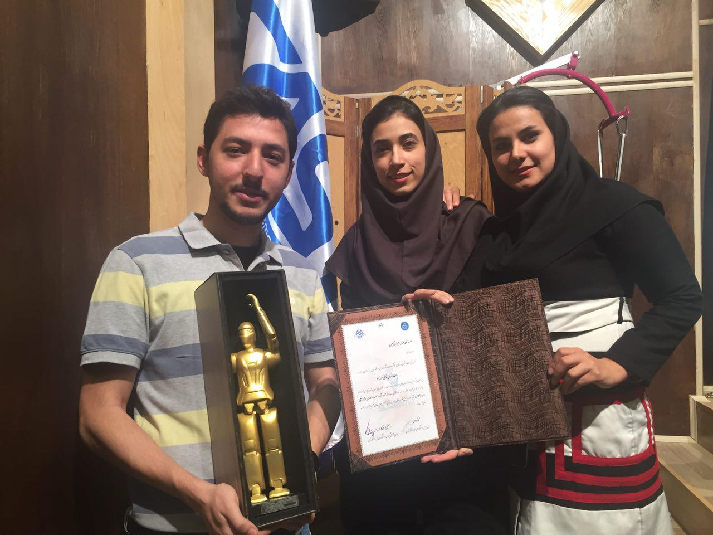

The design and fabrication procedure of the new generation of SURENA humanoid robot with the financial support of Industrial Development and Renovation Organization (IDRO) of Iran has been carried out in University of Tehran. SURENA III has 31 Degrees of Freedom (DOF) and its maneuverability, speed, and intelligence has been greatly improved with respect to its last generations. During this project, a team with 70 members composed of faculty members, robotic researchers and engineers from all over the country took part in the design, fabrication, and implementation procedure of the robot. The project has been conducted in three phases. The first phase focused on the design, modeling, sensor-actuator installation and mechanical fabrication, while the second phase more dealt with dynamics and control challenges, i.e. stability and walking speed enhancement. In the third phase, the high level control and artificial intelligence features have been added to the robot, and an original software framework has been developed.
Surena III is 1.9 meters (6 feet 3 inches) tall and weighs in at 98 kilograms (216 lbs)
About 70 students, engineers, and professors from Tehran University and five other Iranian institutions helped design and build Surena III. Local companies developing robotics software and speech systems also contributed to the project, and Dr. Yousefi-Koma expects that some of the technology developed for the humanoid could find applications in manufacturing, healthcare, and other industries.
My responsibilities in project:
- Development of DCM (Device Communication Manager)
- High level control api for upperbody
- High level api for walk engine
- ROS infrastructure designer
- System monitoring QT GUI
- ROS node manager
- High level behaviour logics and scenario modules
CAST - The Sourena III teamCompared to some of the world’s most advanced humanoids, Surena seems to have more limited capabilities. Honda’s famed Asimo can run and hop on one foot, and a new, experimental humanoid the company is developing can even climb a vertical ladder. Several robots that participated in the DARPA Robotics Challenge, a disaster-response competition inspired by the Fukushima nuclear emergency, were able to perform tasks like driving a vehicle, operating power tools, and walking over a pile of bricks. These robots included Atlas, developed by Boston Dynamics (a company acquired by Alphabet); Carnegie Mellon’s CHIMP; and South Korea’s DRC-HUBO, the winner of the competition.
Dr. Aghil Yousefi-Koma, a professor of mechanical engineering who leads the Surena project, tells IEEE Spectrum that the robot is designed as a research platform to explore bipedal locomotion, human-robot interaction, and other challenges in robotics. He also hopes Surena can help show the importance of engineering careers to students and the public, adding that he views the robot as a symbol of technology advancement “in the direction of peace and humanity.”
For more information please visit the Sourena official webpages :
http://www.surenahumanoid.irClosing ceremony, Software group technical award for outstanding performance